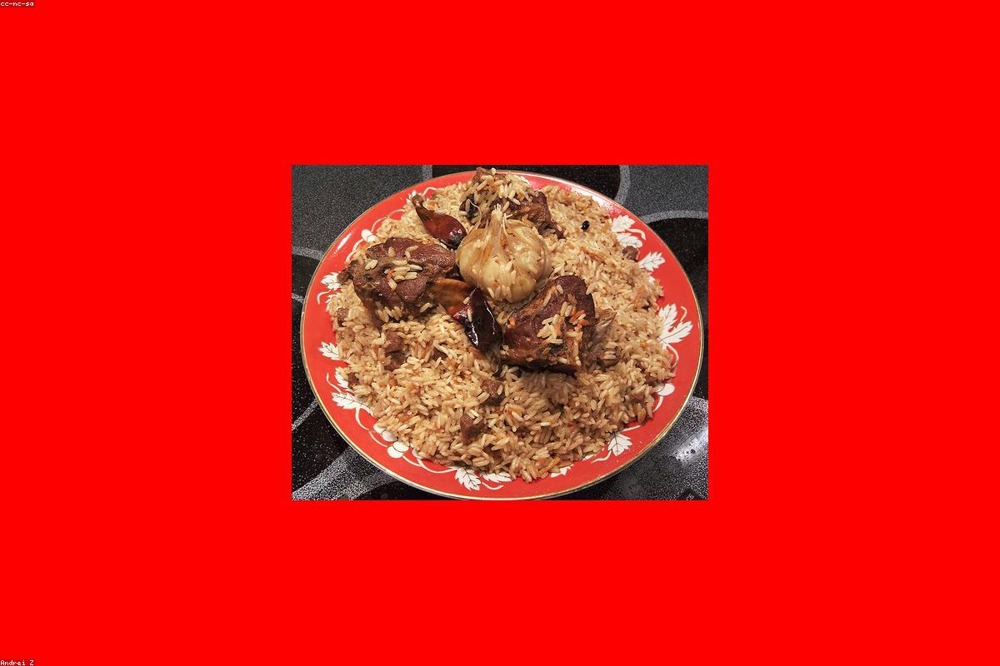

★★★★★
«Плов с айвой — лучший, что я пробовала в городе. Гранатовая кислинка делает своё дело. Атмосфера тёплая, чай несут без остановки.»
Узбекская кухня, где правят гранат и специи. Тёплый восток — на медном блюде, в тандыре и в каждом глотке чая.
«Анор» в переводе — гранат. Для нас это символ восточного гостеприимства: щедрого, тёплого и яркого. Мы собрали рецепты Ферганской долины и Самарканда, чтобы в самом центре Нижнего Новгорода звучали ароматы базара, дымок мангала и звон пиал с чаем.
В нашем зале — медь, охра и золото, неспешные беседы и музыка востока. Тандыр работает с раннего утра, плов готовится в большом казане, а гранат добавляет блюдам ту самую кислинку, ради которой к нам возвращаются. Заходите как гость — оставайтесь как дома.
Открыть меню

«Плов с айвой — лучший, что я пробовала в городе. Гранатовая кислинка делает своё дело. Атмосфера тёплая, чай несут без остановки.»
«Заходили большой компанией. Самса прямо из тандыра, люля сочное, наршараб к крыльям — огонь. Уютно, как в гостях у бабушки на Востоке.»
«Очень красивый интерьер в охре и золоте. Шурпа наваристая, пахлава тает во рту. Цены адекватные, обслуживание внимательное. Вернёмся.»
Нижний Новгород, пр-т Ленина, 39В — в пяти минутах от метро, с удобной парковкой рядом.
Нижний Новгород,
пр-т Ленина, 39В
Ежедневно
11:00 — 23:00
Позвонить
Принимаем заказы навынос